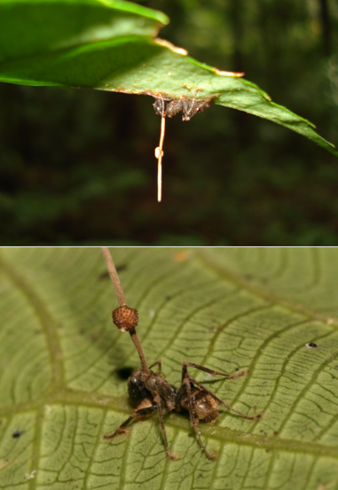
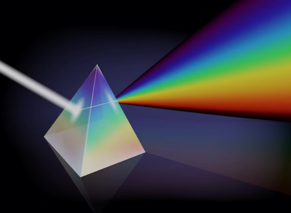

Existe un hongo llamado Ophiocordyceps unilateralis que controla la mente de las hormigas. El hongo infecta a la hormiga, la obliga a trepar a un lugar alto y luego la mata para crecer desde su cuerpo y esparcir sus esporas.
Las momias Chinchorro, de la costa norte de Chile son las momias más antiguas del mundo conocidas hasta ahora, ¡mucho más antiguas que las egipcias!
En 1861, Bunsen y Kirchhoff desarrollaron el análisis espectral, que permite identificar elementos químicos por la luz que emiten. Gracias a esto, se pudieron descubrir elementos en las estrellas sin traerlas a la Tierra.
Según Einstein, el tiempo pasa más lento cerca de objetos masivos o a velocidades cercanas a la luz. Por ejemplo, un astronauta en el espacio envejece un poco más lento que alguien en la Tierra. Este fenómeno, llamado dilatación temporal, es clave en tecnologías como el GPS.